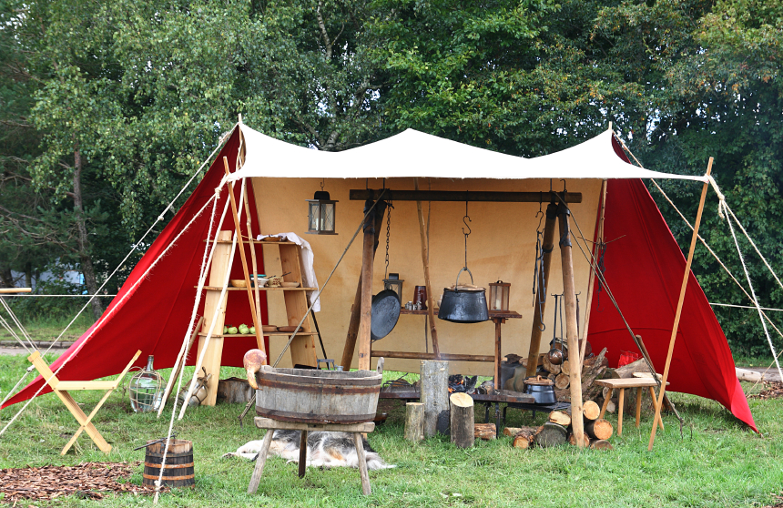

Camper's Kitchen

Cooking meals while camping can be one of the most satisfying experiences. Somehow the food always tastes better when made outdoors. Cooking outdoors can be quite straightforward and simple if you arm yourself with the proper tools. The key is narrowing down what you want from what you really need. Purchasing some basic equipment will make the comforts of home seem not so far away.
The most essential piece of equipment is the camp stove, unless you plan to do all of your cooking over the fire. A camp stove should ideally have two burners and run on either fuel or propane. These are relatively inexpensive, easy to find in any sporting goods store, and simple to maintain. It's a great idea to have a long handled automatic grill lighter for the camp stove, but matches work fine.
In addition to the stove, you'll need a small collection of pots. It's best to have a separate set of camping pots from your pots at home. Pots get full of soot and dirt in the woods, and it's easiest to just keep them separate. The most basic two pots to have in your collection are a big soup pot and a large cast iron frying pan. In addition, you might want to consider including a smaller saucepan. The soup pot and saucepan should both have lids. Some folks swear by their Dutch ovens. These are large cast iron pots with sturdy lids and feet that allow them to sit right on top of the fire coals. The lid is made to have coals placed on top. Consider purchasing a Dutch oven if you are interested in campfire cooking.
Next, assemble your eating equipment. Each family member should have a bowl, plate, fork, knife, spoon, and an insulated mug. These can be made out of plastic, coated enamel aluminium, or stainless steel. Choose the type you prefer and keep them all together in a separate location from your regular dishes.
You'll need some cooking utensils and supplies as well. The most basic to include are a metal spatula, a large spoon, and one or 2 larger sharp knives for cutting vegetables and meat. A cutting board is a great thing to have, although a plate can do in a pinch. If you plan to cook a lot of pasta, don't forget a strainer. Some folks like to bring along a grill grate to throw over the fire for grilling. If you're a coffee drinker, a small plastic coffee drip that sits on top of an individual cup is a must. Throw in a few pot holders and dish towels and you will be ready to get cooking!
Once all that cooking is finished, you'll need to wash the dishes. This will be easiest with a few extra pieces of equipment. Purchase two large plastic dish tubs, one for washing and one for rinsing. Include a sponge and some dish soap, and your dishes will be sparkling clean and ready to be put back in their places in your well stocked camping kitchen.
It's a great idea to store all of this equipment in special containers, either in your garage, basement, or shed. Purchase extra large, clear plastic bins with lids. The lids will keep the equipment from getting dusty and dirty. Being able to see inside the bins is very useful, especially if you have multiple bins.
If you follow these camping tips to assemble the equipment for your kitchen, you'll be prepared no matter what you choose to cook!